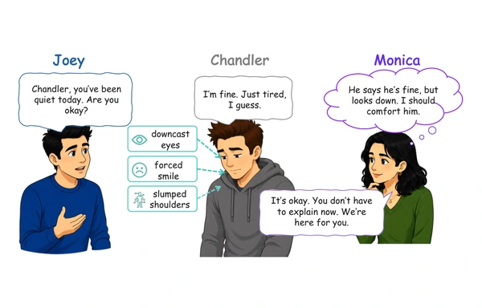
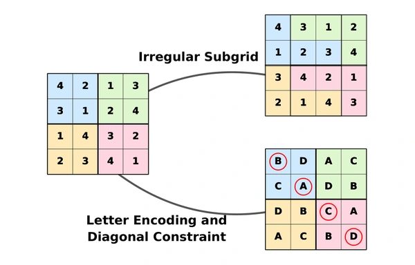
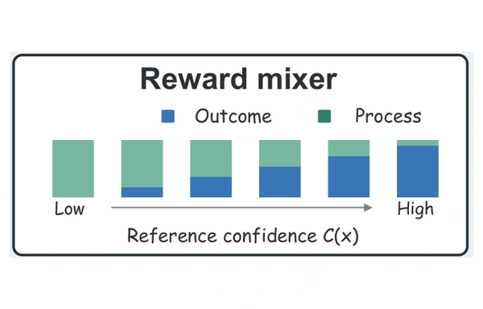
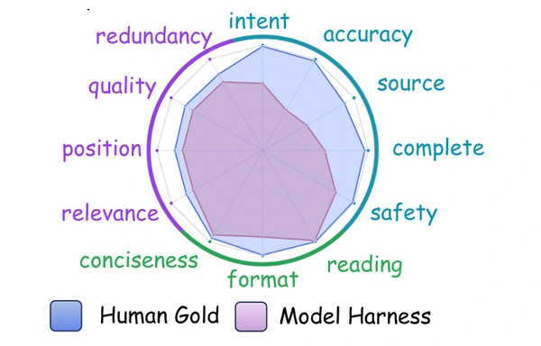

Short bio
🐣 Born in 2003, I’m now a master’s student in Applied Statistics at Fudan University’s School of Data Science (GPA 3.83/4.00, top 1%). I work with Prof. Zhongyu Wei in the Data Intelligence and Social Computing (DISC) Lab. My research focuses on multimodal reasoning and reinforcement learning for agents.
I earned my bachelor’s degree in Data Science and Business Analytics at Central South University’s Business School, with an average of 91.03/100. 🏅 I won first prize in the division for non-math majors at the 14th Chinese Mathematics Competitions for College Students (CMC).
💼 I am currently a research intern on the AllSpark Team at Xiaohongshu, mentored by Dr. Yahui Liu.
Publications
Conference papers

EMNLP 2026 Findings
Shijun Wan, Xuehai Wu, Jiwen Zhang, Siyuan Wang, Zhongyu Wei
Across 240 social scenarios, seven multimodal models often stayed in character but struggled to use visual cues to steer a conversation.

ICLR 2026 · Equal contribution
Jingcong Liang*, Shijun Wan*, Xuehai Wu*, et al.
Across 5,250 puzzles in ten games, we test how reasoning models adapt to unfamiliar rules and recognize when a puzzle has no solution.
Preprints

Under review · First author
AdaptEvo weighs feedback by its reliability and learns from recurring errors. It improves exact-label accuracy by 7.5 percentage points over GRPO on the in-period moderation test.

Under review · Co-author
Haonan Jiang, Guojian Zhan, Jiancong Xie, Shijun Wan, et al.
On 252 photo-based questions from Xiaohongshu users, the best of nine vision-language models answered 52.8% correctly.